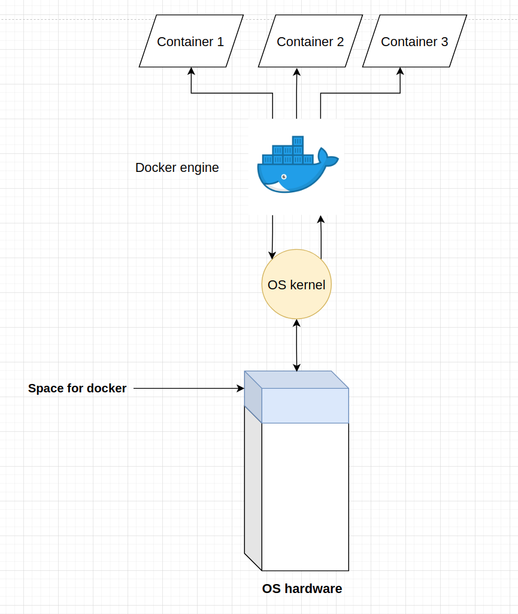
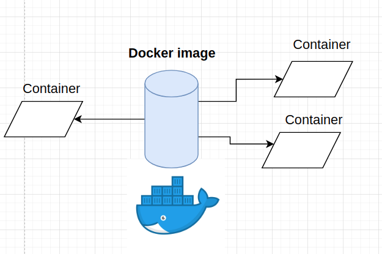

Docker¶

Since it’s launch in March 20, 2013, docker has reshaped alot of companies’ ideas about development and production. Docker enabled developers to isolate and have reproducable application results across any environment where the application is or would be running, given, that an environment has docker engine installed. A developer can simulate any production environment on his/hers computer. This environment isolation and seamless transition between development and production saves alot of time and headaches.
What is docker?¶
Docker is an ecosystem of managing containers. The definition splits into terms with definitions of their own:
A docker ecosystem is a collection of docker backend engine, docker image registry and any other helper software for container and image managment.
A docker container is a runtime instance of a docker image. An informal definition of a container is that it is an isolated application with all the needed dependencies.
Runtime is a phase of a program when the instructions (code) are beeing actively run on a CPU. While the program is running (is in runtime), it is assigned a PID.
An instance is an object that is created using a template (in docker universe - an image).
A docker image is an ordered collection of root filesystem changes and the corresponding execution parameters for use within a container runtime.
A docker backend engine is the main program that creates images, containers and manages every other process that is docker related. Nothing will run if docker backend is not installed on a system.
A docker image registry is an application that enables the storing, updating and downloading of docker images. The most popular image registry is https://hub.docker.com/. This book’s image can be publicly accesed via https://hub.docker.com/repository/docker/eligijusbujokas/ml-serving-book
A high level graph of docker engine on a machine running it:

At the bottom of the graph there is OS hardware components: RAM, CPU and space to store files, among other things. Docker interacts with the resources of the computer via the OS kernel. Therefore, there may be some glitches and bugs when working on docker in Linux vs on Windows, altough most of the time, the containers on both OS work the same.
Every docker image has it’s own space in the filesystem.
Every running docker container has an isolated RAM, CPU, disk space and GPU resources that only it can reach.
Installing docker on Ubuntu¶
First, update the packages in the host machine:
sudo apt update
Next, install some prerequisites for apt package installation via HTTPS:
sudo apt install apt-transport-https ca-certificates curl software-properties-common
Then add the GPG key for the official Docker repository:
curl -fsSL https://download.docker.com/linux/ubuntu/gpg | sudo apt-key add -
Add the Docker repository to apt (Ubuntu package manager) sources:
sudo add-apt-repository "deb [arch=amd64] https://download.docker.com/linux/ubuntu focal stable"
Docker engine installation:
sudo apt install docker-ce
Docker should now be installed, the daemon started, and the process enabled to start on boot. To check whether everything is OK use the command:
docker run hello-world
Problem to solve¶
We will try to analyze the top bigrams in Netflix movie titles. The code which we want to isolate and run is in docker-example/get_top_bigrams.py file.
!cat docker-example/get_top_bigrams.py
# Importing the necesary packages
import os
import pandas as pd
import numpy as np
from sklearn.feature_extraction.text import CountVectorizer
# Extracting the current directory
_cur_dir = os.path.dirname(os.path.abspath(__file__))
# Defining the path to data
_data_path = os.path.join(_cur_dir, 'netflix_titles.csv')
# Reading the descriptions of movies
d = pd.read_csv(_data_path, usecols=["description"])
# Making a list of decsriptions
descriptions = d.values.flatten().tolist()
# Defining the stop words which will be emmited from the desctriptions
STOP_WORDS = [
'in',
'to',
'on',
'of',
'by',
'and',
'with',
'the',
'as'
]
# Initializing the CountVectorizer
cv = CountVectorizer(ngram_range=(2,2), max_features=1000, stop_words=STOP_WORDS)
# Fitting the cv on text
cv_fit = cv.fit_transform(descriptions)
# Extracting the feature names
feature_names = cv.get_feature_names_out()
# Calculating the number of occurance of features
feature_occurance = cv_fit.toarray().sum(axis=0)
# Creating a dataframe with the vocabulary
vocab_df = pd.DataFrame({
"term": feature_names,
"count": feature_occurance
})
vocab_df.sort_values(by='count', ascending=False, inplace=True)
# Printing out the top 20 phrases
print(vocab_df.head(20))
We want the above code to run without errors and in the same way regardless of the underlying machine or OS. The only thing that is needed is docker.
Docker images¶
Docker images are like recipes and docker containers are the cakes made out of those recipes. There can be alot of cakes, but only one recipe.

Lets say we want to build an image that runs a container that calculates the most popular bigrams (two words separated by whitespace) from the Netflix movie descriptions.
Docker images are built with commands in Dockerfiles. An example dockerfile:
!cat docker-example/Dockerfile
# The base image from where we are building the container;
# All the official images can be found in DockerHub
FROM ubuntu:20.04
# Intalling all the packages that will be necessary for the container
# For now, we are only installing python3, pip and c++ compiler for the ubuntu system
RUN apt update && apt install -y \
python3-pip \
gcc
# We can make and set a working directory in the container
WORKDIR /ramen-app
# Copying all the files needed from the local computer to the container
COPY netflix_titles.csv .
COPY get_top_bigrams.py .
COPY requirements.txt .
# Installing all the python packages needed for the analysis
RUN pip install -r requirements.txt
# Running the python script that will generate the top bigrams
CMD ["python3", "get_top_bigrams.py"]
To build the image and store it in the local filesystem, use the command:
docker build -t <image name> -f <path to Dockerfile directory>
!docker build -t netflix-bigrams docker-example
Sending build context to Docker daemon 557.1kB
Sending build context to Docker daemon 3.406MB
Step 1/8 : FROM ubuntu:20.04
---> c29284518f49
Step 2/8 : RUN apt update && apt install -y python3-pip gcc
---> Using cache
---> b817f6a3a0de
Step 3/8 : WORKDIR /ramen-app
---> Using cache
---> 69139c295440
Step 4/8 : COPY netflix_titles.csv .
---> Using cache
---> 4beeebe50e91
Step 5/8 : COPY get_top_bigrams.py .
---> Using cache
---> 55abd39b7c03
Step 6/8 : COPY requirements.txt .
---> Using cache
---> b0693d95cb35
Step 7/8 : RUN pip install -r requirements.txt
---> Using cache
---> 7620c4c69a1d
Step 8/8 : CMD ["python3", "get_top_bigrams.py"]
---> Using cache
---> 01220243d5b0
Successfully built 01220243d5b0
Successfully tagged netflix-bigrams:latest
Note that the first building of the image takes a long time, because everything needs to be downloaded fresh. Additional builds will be faster, because some of the information is cached.
After the image is built, it is stored in (Ubuntu) /var/lib/docker/image directory. When we “build” and image, docker engine creates entries and new files in the image directory and prepares to create a container in runtime using the gathered information in build time.
Docker containers¶
Docker can only run containers with built images. To run a container with an image which has a known tag (in our case - netflix-bigrams), we can use the command:
docker run <image name>
!docker run netflix-bigrams
term count
841 this documentary 234
926 when he 173
395 high school 145
755 stand up 145
986 year old 145
276 for his 115
928 when his 113
998 young woman 111
995 young man 110
420 his family 105
460 his wife 103
439 his life 102
274 for her 102
446 his own 100
615 new york 98
934 when she 98
722 sets out 94
805 their lives 94
308 from his 89
209 each other 89
The container outputed the top bigrams used in netflix movie descriptions.
After the container has done it’s task, it is shutdown, all the data that was generated in the container is deleted and every bit of resource that the container was using is freed up for all other PIDs in the host machine.
Sharing docker images¶
To run a container from an image in another computer or the cloud, the first thing to remember is that the host machine which will run the container has to have docker backend engine installed.
To share the images, there are multiple options:
DockerHub account¶
Any user of docker can open a free or a business account in DockerHub via https://hub.docker.com/. After signing up, a user can push and pull images directly to and from the cloud.
docker push <docker hub username>/<image name>
Then, if the image is public, any person can download the image using the command:
docker pull <docker hub username>/<image name>
For example, this book has an image in DockerHub and can be pulled using the command:
docker pull eligijusbujokas/ml-serving-book
Saving an image to an archive¶
To save an image into a sharable archive, use the command:
docker save -o <name of archive>.tar.gz <image name>
This will create a .tar.gz file which can be ingested by docker in any machine with the command
docker load --input <name of archive>.tar.gz
Contributions¶
If you enjoyed the book so far and feel like donating, feel free to do so. The link to do a one time donation is via Stripe.
Additionaly, if you want me to add another chapter or to expand an existing one, please create an issue on Github.